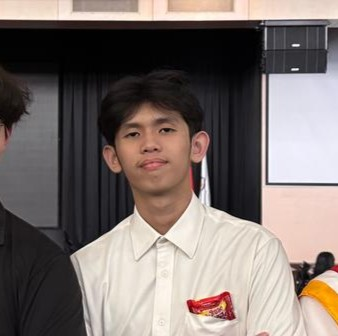
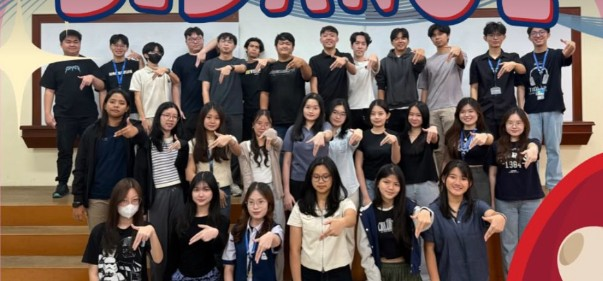
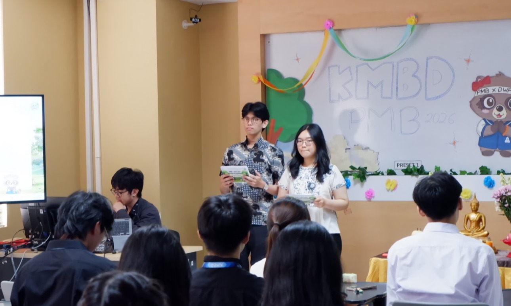
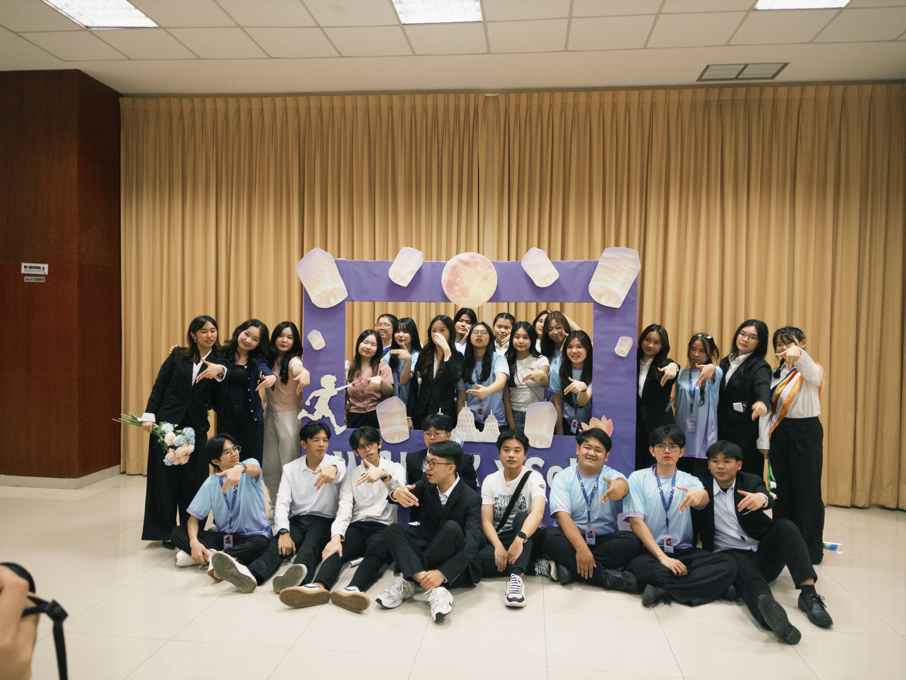
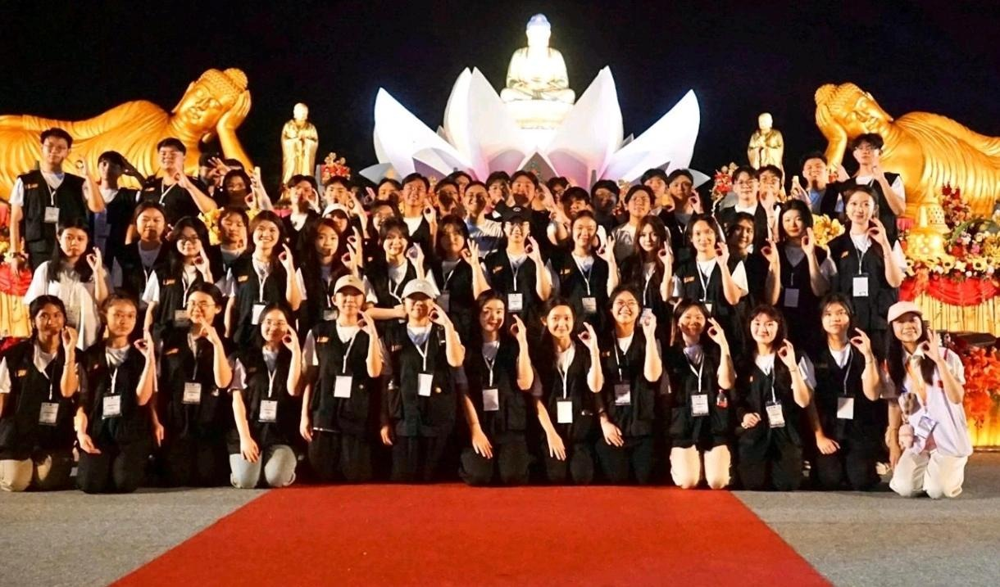

CAPTURE THE FLAG
Hack The Box & CTF
Comprehensive documentation and exploitation methodologies for various CTF machines and challenges across different platforms and environments.
See the Write Up ↗HELLO, I'M
Exploring offensive security, web penetration testing, and translating technical vulnerabilities into actionable business risk mitigation.

01 / ABOUT
I am a Cyber Security undergraduate at BINUS University (Current GPA: 3.78) with a strong interest in Penetration Testing and Risk Mitigation. I enjoy learning by building projects, solving security challenges, and turning technical concepts into practical work.
My approach to cybersecurity bridges the gap between technical exploitation and business strategy. With a foundation in Public Relations and hands-on team leadership, my objective is to analyze vulnerabilities, evaluate their broader impact, and communicate clear mitigation strategies for developers and decision makers.
02 / WORK
A selection of technical security audits, tool development, and CTF write-ups.
CAPTURE THE FLAG
Comprehensive documentation and exploitation methodologies for various CTF machines and challenges across different platforms and environments.
See the Write Up ↗VULNERABILITY ASSESSMENT
Conducted an independent vulnerability assessment on a live school web infrastructure. Discovered and documented critical flaws including Cross-site scripting (XSS) and exposed hardcoded administrator credentials.
See the report ↗TOOL DEVELOPMENT
Developed a multi-threaded Python scanner to uncover typosquatting and brand impersonation in real-time. Features algorithmic mutation engines (omission, bitsquatting), automated redirect inspection, and URLScan.io threat intelligence integration.
View in GitHub ↗WEB DEVELOPMENT
Proposed a tiered JWT revocation architecture that uses behavioral anomaly scoring to identify suspicious sessions and dynamically determine whether to revoke a single token or all active sessions. The proposed architecture combines Bloom Filters and Token Versioning with a fail-secure approach to balance security and stateless performance.
View the report ↗03 / EXPERIENCE
My journey in leadership, public speaking, and community empowerment.

ORGANIZATION • DEC 2024 - Present
Serving as the organizational representative for external community relations.

ORGANIZATION • JUL 2026 - AUG 2026
Hosted 5 comprehensive New Student Admissions orientation sessions across Kemanggisan and Senayan campuses. Effectively communicated guidelines to large audiences while maintaining high enthusiasm.

ORGANIZATION • JUN 2026
Served as the dedicated VIP Liaison (Dayaka) for a revered Bhikkhu. Proactively anticipated needs and provided high-touch assistance to ensure optimal comfort, seamless transitions, and strict adherence to protocols.

VOLUNTEER • MAY 2025
Assisted with crowd management and directed general attendees at Perwakilan Umat Buddha Indonesia (WALUBI). Provided clear event information to ensure a smooth guest experience.
04 / CONTACT
Feel free to get in touch for projects, technical collaboration, and professional connections!